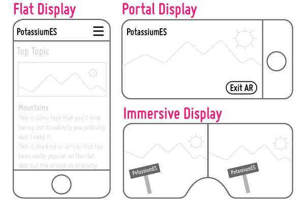

🌸 PotassiumES 🌸
What Is The Wider Web?
We often use the phrase "the wider web" and it can be a bit mysterious. Here's a quick overview:
The wider web is a near-future web that responsively supports:
Three display modes:
Three control types:
New input types:
More hugs, fewer thugs:
One important aspect of the wider web is that we're opening our arms wider to welcome more people. People with different abilities. People with different beliefs (except fascism). People with different wants and needs.
(made with 💖 at Transmutable)